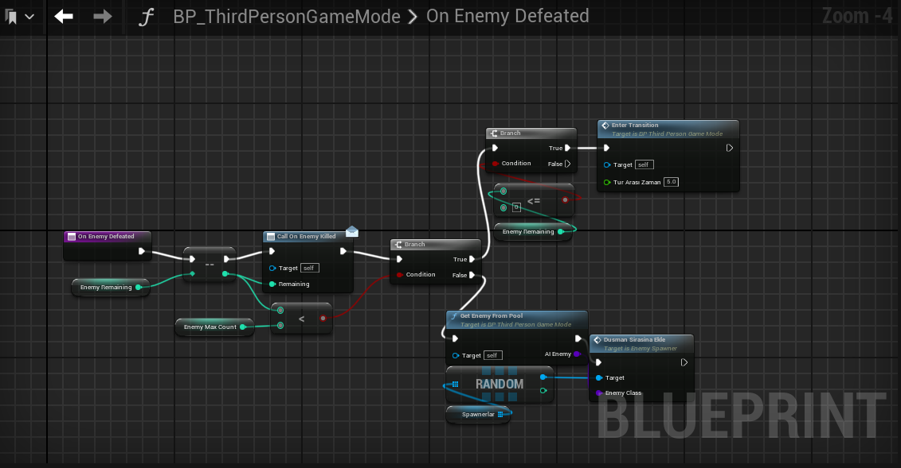

Bu, Unreal Engine kullanarak geliştirdiğim Topdown Tower Defence projesinin detaylarıdır.
Oyun alanının genel görünümü. Bu görüntü, oyun alanının genişliğini ve yerleşimini göstermektedir.
Kameranın Pozisyonu Karakterin Görünümü (Viewport).
Karakterin Mouse Cursor'ı takip etmesini sağlar
Karakterin Mouse Cursor'ı takip etmesini sağlayan fonksiyon
Oyun karakterinin rotasyonunu ayarlayan Blueprint. Bu görüntü, karakterin hareket ve dönüşünü kontrol eden kodları göstermektedir.
Karakterin hareket girişlerini yöneten Blueprint. Bu görüntü, karakterin ileri, geri, sağa ve sola hareketini kontrol eden kodları göstermektedir.
Karakterin Zıplama Fonksiyonunu yerine getiren Blueprint. Zıplama Tuşuna Basıldığında zıplamayı sağlar
Karakterin hasar almasını yöneten Blueprint. Bu görüntü, karakterin aldığı hasarı ve sağlığını kontrol eden kodları göstermektedir. Eğer Can Seviyesi sıfıra gelirse Ölüm eventini çağırır.
Karakterin hareketini durdurarak ölüm animasyonunu çağırır. Animasyon Tamamlandıktan sonra ise Respawn Eventini Çağırır
Karakteri oyunun başladığı yere ışınlar ve Karakterin hareket etmesine izin verir. Canlandırma Eventini Çağırır.
Sol mouse tuşuna basılı tuttuğumuzda Karakterin baktığı yöne doğru ilerleyen ışınlar spawnlar.
Karakterin kontrol şeması.
Düşman Spawnerı
Her Tur Çağırımasını istediğimiz düşmanların listesi
Düşman listesini alarak Düşman havuzunun oluşturulması
Düşman sayısı 0'dan aşağı indiğinde tur zaman arasına girmesini sağlayan fonksiyon
User Interface
Health UI
Build Sistemi+